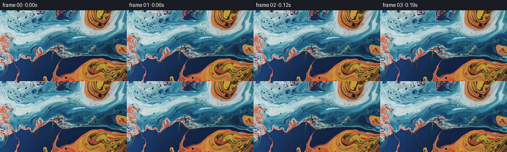
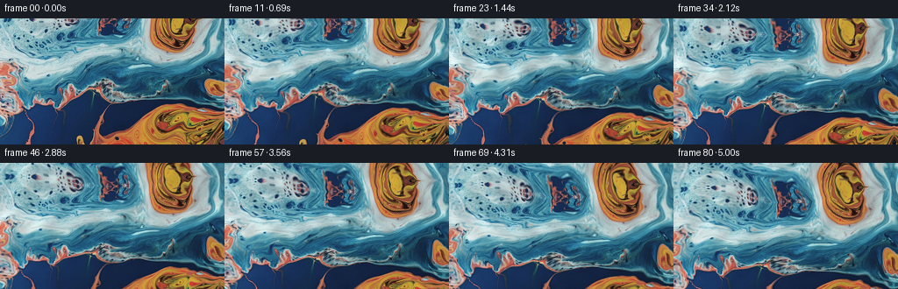

CODING AGENTS AS PIXEL WORLD MODELS
traex/GPT-6.1-Sol · 0003_s0
点击播放 · 原生 RGB 像素
逐轮保存的候选
回放视频、检查图与代码变化。
每份候选均可单独播放。实际图片检查记录在下方工具轨迹中。
候选 01播放与检查图
点击播放 · 原生 RGB 像素


展开代码变化
--- 上一保存版本
+++ 本次保存版本
@@ -0,0 +1,205 @@
+"""Animate the supplied liquid photograph with a coherent, non-learned flow.
+
+The texture is advected by a divergence-free velocity field. Small travelling
+surface waves refract the texture, and the viewing rays rotate upwards. No
+additional imagery is used.
+"""
+from pathlib import Path
+import json
+import numpy as np
+from PIL import Image, ImageFilter
+import artifact_io
+
+
+ROOT = Path(__file__).resolve().parent
+
+
+def linear_sample(a, x, y):
+ """Bilinear sampling of scalar or vector fields, with safe edge clamping."""
+ h, w = a.shape[:2]
+ x = np.clip(x, 0, w - 1.001)
+ y = np.clip(y, 0, h - 1.001)
+ ix, iy = np.floor(x).astype(np.int32), np.floor(y).astype(np.int32)
+ fx, fy = x - ix, y - iy
+ if a.ndim == 3:
+ fx, fy = fx[..., None], fy[..., None]
+ return ((a[iy, ix] * (1 - fx) + a[iy, ix + 1] * fx) * (1 - fy)
+ + (a[iy + 1, ix] * (1 - fx) + a[iy + 1, ix + 1] * fx) * fy)
+
+
+def cubic_weights(t):
+ return (-0.5 * t + t*t - 0.5 * t*t*t,
+ 1 - 2.5 * t*t + 1.5 * t*t*t,
+ 0.5 * t + 2 * t*t - 1.5 * t*t*t,
+ -0.5 * t*t + 0.5 * t*t*t)
+
+
+def cubic_sample(a, x, y):
+ """Catmull-Rom sampling keeps the fine original liquid detail crisp."""
+ h, w = a.shape[:2]
+ ix, iy = np.floor(x).astype(np.int32), np.floor(y).astype(np.int32)
+ wx, wy = cubic_weights(x - ix), cubic_weights(y - iy)
+ result = np.zeros(x.shape + (3,), dtype=np.float32)
+ for j in range(4):
+ row = np.zeros_like(result)
+ jj = np.clip(iy + j - 1, 0, h - 1)
+ for i in range(4):
+ ii = np.clip(ix + i - 1, 0, w - 1)
+ row += a[jj, ii] * wx[i][..., None]
+ result += row * wy[j][..., None]
+ return result
+
+
+def mirror_coordinate(z, size):
+ p = np.mod(z, 2 * (size - 1))
+ return np.where(p <= size - 1, p, 2 * (size - 1) - p)
+
+
+def make_texture(im, x, y):
+ """Continue the original surface just outside the photographic crop.
+
+ Only the near top continuation becomes visible. It uses the same RGB
+ pixels, with an irregular continuation rather than a straight mirror.
+ Its displacement and its first horizontal derivative vanish at the crop.
+ """
+ h, w = im.shape[:2]
+ upper = np.maximum(-y, 0)
+ lower = np.maximum(y - (h - 1), 0)
+ xx = x + (0.105 * upper * (1 - np.exp(-upper / 9))
+ * (0.55 + 0.45 * np.sin(x / 41 + upper / 27)))
+ xx += lower * 0.04 * np.sin(x / 36)
+ yy = mirror_coordinate(y, h)
+ # A little extra stretch makes new ripples less obviously mirrored.
+ yy = np.where(y < 0, yy * (0.87 + 0.08 * np.sin(x / 58)), yy)
+ xx = mirror_coordinate(xx, w)
+ return cubic_sample(im.astype(np.float32), xx, yy)
+
+
+def velocity(x, y, t):
+ """Slow smooth eddies plus travelling incompressible wave currents."""
+ vx = np.full_like(x, -0.24)
+ vy = np.full_like(y, 0.55)
+ # (centre, radius, peak speed, direction, phase)
+ vortices = [(72, 47, 37, 2.4, 1, 0.2),
+ (190, 16, 32, 2.1, -1, 1.8),
+ (183, 120, 43, 2.3, 1, 3.2),
+ (18, 108, 32, 1.3, -1, 0.8),
+ (255, 73, 31, 1.5, 1, 2.4)]
+ for cx, cy, radius, peak, sign, phase in vortices:
+ dx, dy = x - cx, y - cy
+ e = np.exp(-(dx*dx + dy*dy) / (2 * radius*radius))
+ a = sign * peak * 1.64872 / radius
+ a *= 0.90 + 0.15 * np.sin(0.61 * t + phase)
+ vx += -a * dy * e
+ vy += a * dx * e
+ for length, angle, amp, omega, phase in [
+ (102, 0.72, 0.75, 0.72, 0.4),
+ (73, -0.58, 0.58, 1.05, 1.9),
+ (47, 1.15, 0.42, 1.55, 3.4),
+ ]:
+ k = 2*np.pi / length
+ kx, ky = k*np.cos(angle), k*np.sin(angle)
+ f = amp * np.cos(kx*x + ky*y - omega*t + phase)
+ vx += f * np.sin(angle)
+ vy -= f * np.cos(angle)
+ return vx, vy
+
+
+def ripples(x, y, t):
+ """Travelling microrelief; offsets are exactly zero at time zero."""
+ dx, dy = np.zeros_like(x), np.zeros_like(y)
+ light = np.zeros_like(x)
+ waves = [(37, .35, 1.05, 1.6, .3),
+ (25, -.65, .52, 2.4, 2.2),
+ (59, 1.28, .87, 1.05, 4.0),
+ (16, .9, .19, 3.0, 1.1)]
+ for length, angle, amp, omega, phase in waves:
+ k = 2*np.pi / length
+ p = k*(np.cos(angle)*x + np.sin(angle)*y) + phase
+ dp = np.sin(p - omega*t) - np.sin(p)
+ dx += amp * np.cos(angle) * dp
+ dy += amp * np.sin(angle) * dp
+ light += (0.28 * amp * k
+ * (np.cos(p - omega*t) - np.cos(p)))
+ return dx, dy, light
+
+
+def generate():
+ spec = json.loads((ROOT / 'task_spec.json').read_text())
+ n, h, w = spec['frames'], spec['height'], spec['width']
+ fps = spec['fps']
+ first = np.asarray(Image.open(ROOT / 'first_frame.png').convert('RGB'))
+ assert first.shape == (h, w, 3)
+
+ # A generous world-space border keeps every camera ray inside the flow.
+ pad = 64
+ gy, gx = np.mgrid[:h + 2*pad, :w + 2*pad].astype(np.float32)
+ world_x, world_y = gx - pad, gy - pad
+ texture = make_texture(first, world_x, world_y)
+ # Reset the actual observed crop, with no resampling at all.
+ texture[pad:pad+h, pad:pad+w] = first
+
+ # Backward material map: solve dM/dt + v.grad(M)=0. Only coordinates
+ # are advected, not colors, avoiding cumulative RGB interpolation blur.
+ material = np.stack([gx, gy], axis=-1)
+ yy, xx = np.mgrid[:h, :w].astype(np.float32)
+ u, v = xx - (w-1)/2, yy - (h-1)/2
+ frames = np.empty((n, h, w, 3), dtype=np.uint8)
+ frames[0] = first
+
+ # Broad highlight values, sampled with the same material coordinates.
+ # These modulate illumination, without laying new patterns over the image.
+ soft = np.asarray(Image.fromarray(np.clip(texture, 0, 255).astype(np.uint8))
+ .filter(ImageFilter.GaussianBlur(2.0))).astype(np.float32)
+ highlight_field = (soft @ np.array([.2126, .7152, .0722], dtype=np.float32))/255
+ dt = 1/fps
+ focal = 365.0
+ duration = (n-1)/fps
+ for frame_index in range(1, n):
+ t = frame_index / fps
+ # A midpoint semi-Lagrangian integration step.
+ vx0, vy0 = velocity(world_x, world_y, t - dt/2)
+ vx, vy = velocity(world_x - dt/2*vx0,
+ world_y - dt/2*vy0, t - dt/2)
+ material = linear_sample(material, gx - dt*vx, gy - dt*vy).astype(np.float32)
+
+ # An actual upward pitch of the camera (rather than a vertical zoom).
+ # About 30 px of new surface enters along the upper edge in five secs.
+ q = t/duration
+ progress = q - .075*np.sin(2*np.pi*q)/(2*np.pi)
+ pitch = .084 * progress
+ cs, sn = np.cos(pitch), np.sin(pitch)
+ depth = focal*cs + v*sn
+ camera_x = (w-1)/2 + focal*u/depth
+ camera_y = (h-1)/2 + focal*(v*cs - focal*sn)/depth
+ # Almost imperceptible secondary yaw, as in a controlled macro move.
+ camera_x += .55 * np.sin(.6*t)
+
+ mx = camera_x + pad
+ my = camera_y + pad
+ mapped = linear_sample(material, mx, my)
+ rx, ry, lighting = ripples(camera_x, camera_y, t)
+ sx = mapped[..., 0] + rx
+ sy = mapped[..., 1] + ry
+ rgb = cubic_sample(texture, sx, sy)
+
+ luminosity = linear_sample(highlight_field, sx, sy)
+ # Moving glints preferentially follow the existing bright liquid
+ # ridges. Dark blue and orange retain their original rich coloration.
+ shine = np.clip((luminosity - .31)/.51, 0, 1)
+ gain = lighting * (.26 + .40*shine)
+ rgb *= 1 + gain[..., None]
+ rgb += (lighting * 7 * shine)[..., None] * np.array([.72, .92, 1.0])
+ frames[frame_index] = np.clip(np.rint(rgb), 0, 255).astype(np.uint8)
+
+ assert np.array_equal(frames[0], first)
+ artifact_io.save(frames, ROOT)
+ np.save(ROOT / '.tmp' / 'rgb_video.npy', frames)
+ print(f'Saved {n} RGB frames, {w}x{h}, {fps} fps.')
+ print('Adjacent-frame RGB mean absolute difference:',
+ np.round(np.abs(np.diff(frames.astype(np.float32), axis=0))
+ .mean(axis=(1, 2, 3))[[0, 1, 19, 39, 59, 79]], 3))
+
+
+if __name__ == '__main__':
+ generate()
候选 02播放与检查图
点击播放 · 原生 RGB 像素

展开代码变化
--- 上一保存版本
+++ 本次保存版本
@@ -194,6 +194,23 @@
assert np.array_equal(frames[0], first)
artifact_io.save(frames, ROOT)
+ # Optional convenience container; the RGB frames above are authoritative.
+ # This uses the encoder only, not a simulation or rendering engine.
+ try:
+ import imageio_ffmpeg
+ except ImportError:
+ pass
+ else:
+ writer = imageio_ffmpeg.write_frames(
+ str(ROOT / 'video.mp4'), (w, h), fps=fps,
+ codec='libx264rgb', pix_fmt_in='rgb24', pix_fmt_out='rgb24',
+ macro_block_size=1, ffmpeg_log_level='error',
+ output_params=['-crf', '0', '-preset', 'medium',
+ '-movflags', '+faststart'])
+ writer.send(None)
+ for frame in frames:
+ writer.send(np.ascontiguousarray(frame))
+ writer.close()
np.save(ROOT / '.tmp' / 'rgb_video.npy', frames)
print(f'Saved {n} RGB frames, {w}x{h}, {fps} fps.')
print('Adjacent-frame RGB mean absolute difference:',
可观测工具轨迹
实际执行的命令与返回图片。
命令 1exit 0
/bin/bash -lc "ls -la && cat prompt.txt && printf '\\n--- RULES ---\\n' && cat GENERATION_RULES.md"
命令 2exit 0
/bin/bash -lc "cat task_spec.json && cat artifact_io.py && python - <<'PY'
from PIL import Image
import numpy as np
im=np.array(Image.open('first_frame.png').convert('RGB'))
print('shape',im.shape)
print('range',im.min((0,1)),im.max((0,1)),im.mean((0,1)))
for y in range(0,144,12):
print('row',y, [(tuple(im[y:y+12,x:x+16].mean((0,1)).astype(int))) for x in range(0,256,16)])
# classify blocks to give approximate colored layout, not displaying source image
for y in range(0,144,4):
s=''
for x in range(0,256,4):
r,g,b=im[y:y+4,x:x+4].mean((0,1))
s+= ' ' if max(r,g,b)<18 else 'o' if r>b*1.35 and r>g*1.1 else 'B' if b>r*1.5 else 'c' if g>r*1.25 else '.'
print(s)
PY"命令 3exit 0
/bin/bash -lc "python - <<'PY'
import importlib.util
from PIL import Image
import numpy as np
for m in ['scipy','cv2','imageio','imageio_ffmpeg']:
print(m, bool(importlib.util.find_spec(m)))
a=np.asarray(Image.open('first_frame.png')).astype(float)
l=.2126*a[:,:,0]+.7152*a[:,:,1]+.0722*a[:,:,2]
for axis in [0,1]:
d=np.abs(np.diff(l,axis=axis));print('gradient',axis, np.percentile(d,[25,50,75,90,95,99]))
# color shapes indexed by coarse pixel row, for material structure
blue=a[:,:,2]-a[:,:,0]; warm=(a[:,:,0]-a[:,:,2])>35
for y in range(0,144,8):
runs=[]; rr=np.where(warm[y:y+8].mean(0)>.6)[0]
if len(rr):
for run in np.split(rr,np.where(np.diff(rr)>1)[0]+1):runs.append((run[0],run[-1]))
print(y,'orange spans',runs)
PY"命令 4exit 0
/bin/bash -lc "python - <<'PY'
from PIL import Image
import numpy as np
im=np.asarray(Image.open('first_frame.png')).astype(float)
# Detailed luminance relief for understanding source surface texture.
l=im@np.array([.2126,.7152,.0722]);chars=' .:-=+*#%@'
for y in range(0,144,3):
print(''.join(chars[min(9,int(v/24))] for v in l[y:y+3].reshape(3,64,4).mean((0,2))))
PY"命令 5exit 0
/bin/bash -lc "which ffmpeg || true; du -sh .; python - <<'PY'
from PIL import Image
import numpy as np
im=np.asarray(Image.open('first_frame.png'))
print('edge means')
for h in [1,4,10,20,30]: print(h,im[:h].mean((0,1)))
PY"命令 6exit 0
/bin/bash -lc 'python generate.py'
命令 7exit 0
/bin/bash -lc "python - <<'PY'
from pathlib import Path
from PIL import Image
import numpy as np
f=np.load('.tmp/rgb_video.npy')
src=np.asarray(Image.open('first_frame.png').convert('RGB'))
print('Specification:',f.shape,f.dtype,'first-frame exact:',np.array_equal(src,f[0]))
d=np.abs(np.diff(f.astype(float),axis=0)).mean((1,2,3))
print('Motion consistency MAD min/mean/max:',d.min(),d.mean(),d.max())
for i in [0,20,40,60,80]:
a=f[i].astype(float);l=a@np.array([.2126,.7152,.0722]);
print(i,'RGB mean',a.mean((0,1)).round(2),'detail',np.mean(np.abs(np.diff(l,axis=0))).round(2),np.mean(np.abs(np.diff(l,axis=1))).round(2),'dark fraction',(l<5).mean().round(4))
# Measure photographic-texture displacement by local window matching.
# Compare patches in frame 0 with frame 80; expected downward drift.
from numpy.lib.stride_tricks import sliding_window_view
l0=f[0].astype(float).mean(2);l1=f[80].astype(float).mean(2)
for y,x in [(24,30),(48,40),(60,118),(100,65),(20,199)]:
patch=l0[y-6:y+7,x-6:x+7]
ya,yb=max(0,y-6-20),min(144,y-6+56+13)
xa,xb=max(0,x-6-20),min(256,x-6+20+13)
windows=sliding_window_view(l1[ya:yb,xa:xb],(13,13))
# mean-normalized SSD robust to lighting differences
windows=windows-windows.mean((-1,-2),keepdims=True)
p=patch-patch.mean()
s=((windows-p)**2).mean((-1,-2))
dy,dx=np.unravel_index(s.argmin(),s.shape)
print('patch',(x,y),'best displacement',(xa+dx+6-x,ya+dy+6-y),'RMSE',s.min()**.5)
print('Outputs:', [(p.name,p.stat().st_size) for p in Path('.').iterdir() if p.is_file()])
import imageio_ffmpeg
print('encoder available:',Path(imageio_ffmpeg.get_ffmpeg_exe()).is_file())
PY"命令 8exit 0
/bin/bash -lc "python generate.py && python - <<'PY'
import imageio_ffmpeg
import numpy as np
from PIL import Image
r=imageio_ffmpeg.read_frames('video.mp4',pix_fmt='rgb24')
meta=next(r)
a=np.frombuffer(next(r),np.uint8).reshape(144,256,3)
count=1+sum(1 for _ in r)
print('Encoded video:',meta['size'],meta['fps'],'frame count',count,'decoded first exact',np.array_equal(a,np.asarray(Image.open('first_frame.png').convert('RGB'))))
PY"保存候选 2 份；完成命令 8 次；可验证图片返回 0 张。原始 API 响应与完整日志保留在本地。